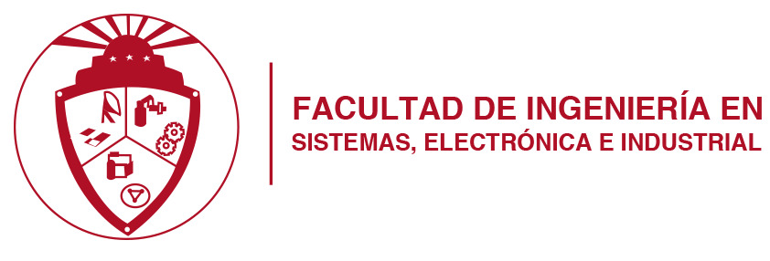

Esta sección es el punto de acceso a una amplia gama de servicios que la FISEI ofrece a la comunidad
universitaria, incluyendo repositorios, el Centro de Transferencia Tecnológica (CTT) y los Talleres
Tecnológicos, que brindan una experiencia de calidad y enriquecedora.
La FISEI cuenta con una biblioteca moderna equipada con recursosdigitales, acceso a bases de
datos científicas y material especializado para el desarrollo académico de los estudiantes.
Dispone de laboratorios equipados con tecnología de última generación en áreas como:
Espacio dedicado a la innovación y desarrollo tecnológico, donde estudiantes y docentes
pueden trabajar en proyectos de investigación y transferencia de conocimientos a la industria.
Se ofrece acompañamiento en diversas áreas del conocimiento mediante
tutorías personalizadas y asesoramiento en proyectos de grado.
Oportunidades para que los estudiantes realicen intercambios en universidades
nacionales e internacionales, ampliando su formación académica y cultural.
Mantenimiento de equipos informáticos, soporte en software y asesoría en redes
y telecomunicaciones para la comunidad universitaria.